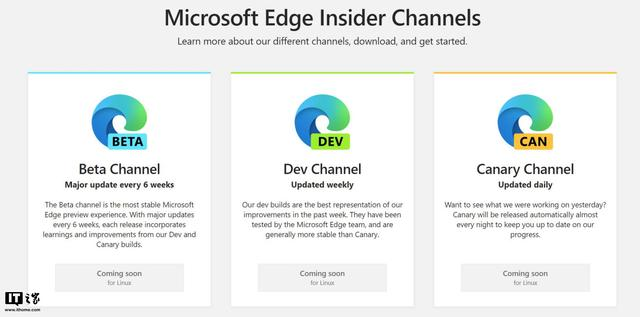

IT之家9月28日消息 据IT之家报道，9 月 22 日， 微软宣布将于下个月推出 Linux 版 Edge 浏览器的预览版。 目前，Linux 版 Edge 浏览器已出现在微软 insider 计划项目上， 并且提供 BETA、DEV、CAN 通道版本。
据了解，微软推出 Edge Linux 预览版是为了吸引企业使用 Edge ， 微软还在 Ignite 上宣布，将使IT管理员更容易管理 Edge 中的 Internet Explorer 模式。 这是一种帮助企业更安全地使用旧网站的模式，而不必使用 Internet Explorer 本身。
